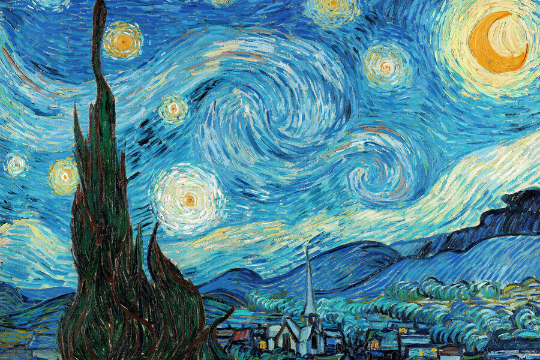

Installée au pied des Baux-de-Provence dans d'anciennes carrières d'ocre,
la Carrière des Lumières propose une expérience immersive unique, à la
croisée de l'art, de la lumière et de la musique. Mondialement connues
pour avoir servi de décor au film Le Testament d'Orphée de Jean
Cocteau, les carrières ont été transformées en 1978 en un lieu de
spectacle visuel à grande échelle. Sur plus de 7 000 m² de parois, les
œuvres sont projetées à 360°, accompagnées d'une mise en son enveloppante.
Cette année, le spectacle principal,
« Monet : créateur de l'impressionnisme »
, rend hommage à
Claude Monet et à ses contemporains à travers une déambulation monumentale
autour de Impression, soleil levant. En parallèle, le programme
court « Le Douanier Rousseau, le pays des rêves »
plonge le
visiteur dans un univers végétal et fantastique, entre jungles imaginaires
et poésie visuelle.
Pour réserver : Rapprochez-vous du concierge de votre hôtel pour acheter les billets et profiter de la navette gratuite jusqu'au site
Pour en savoir plus : carrieres-lumieres.com